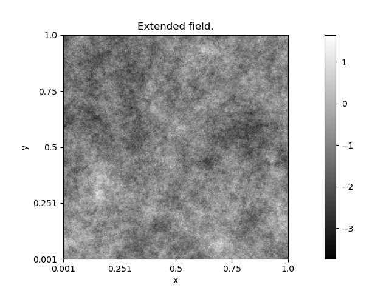
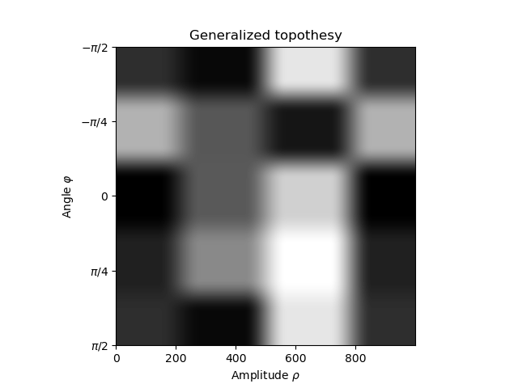

Note
Click here to download the full example code
Textured images with spectral variations¶
Code author: Frédéric Richard <frederic.richard_at_univ-amu.fr>
In this example, we show how to simulate a field having a topothesy whose values may vary depending both on the direction and the amplitude.
Note
The obtained simulation relates to a model with a semi-variogram of the form:
\[v(x) = \int_{\mathbb{R}^2} \vert e^{i\langle x, w \rangle} - 1 \vert^2
\tau(w) \vert w \vert^{2H-2} dw.\]
where, contrarily to usual AFBF, the value \(\tau(w)\) does not only depend on the direction \(\arg(w)\) of \(w\), but also on its amplitude \(\vert w \vert\).
- 
- 
import numpy as np
from afbf import perfunction, tbfield
from matplotlib import pyplot as plt
nb_angle = 4 # Number of angle subdivisions.
nb_spect = 3 # Number of spectrum subdivisions.
# Definition of a fractional Brownian field.
Z = tbfield('fbf')
Z.hurst.ChangeParameters(
np.array([0.1])
)
Z.NormalizeModel()
Z.ExtendTopothesy(nb_spect, nb_angle)
for j in range(nb_spect):
# Set uniformly spaced interval for the step functions.
Z.gtopo[j].SetUniformStepInterval()
np.random.seed(1)
z = Z.Simulate()
z.name = 'Extended field.'
z.Display(1)
# Visualize the generalized topothesy.
gtopo = perfunction('step-smooth', nb_spect) # Topothesy at an angle.
gtopo.SetUniformStepInterval()
z = np.linspace(-np.pi / 2, np.pi / 2, 1000)
im = np.zeros((z.size, z.size))
for i in range(z.size):
# Setting parameters of the topothesy at angle z[i]
for j in range(nb_spect):
Z.gtopo[j].Evaluate(np.array([z[i]]))
# The value of Z.gtopo[j] at z[i] gives the values of the jth
# parameter of the generalized topothesy at the ith angle.
gtopo.fparam[0, j] = Z.gtopo[j].values[0, 0]
# Evaluate the topothesy at angle z[i]
gtopo.Evaluate(z)
im[i, :] = gtopo.values.reshape((1, z.size))
plt.figure(2)
plt.imshow(im, cmap='gray')
plt.title('Generalized topothesy')
plt.xlabel(r'Amplitude $\rho$')
plt.ylabel(r'Angle $\varphi$')
loc, lab = plt.yticks(
np.linspace(0, z.size, 5),
[r'$-\pi/2$', r'$-\pi/4$', r'$0$', r'$\pi/4$', r'$\pi/2$']
)
Total running time of the script: ( 2 minutes 31.324 seconds)